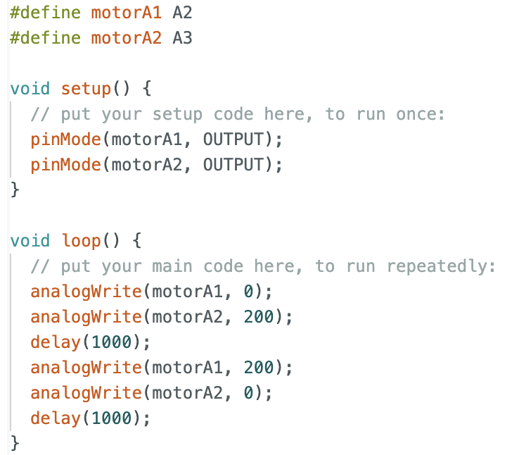
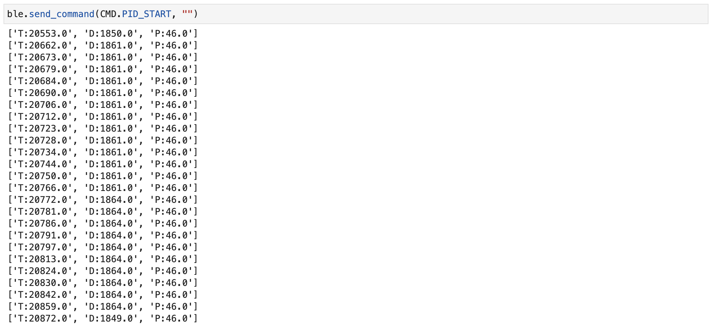
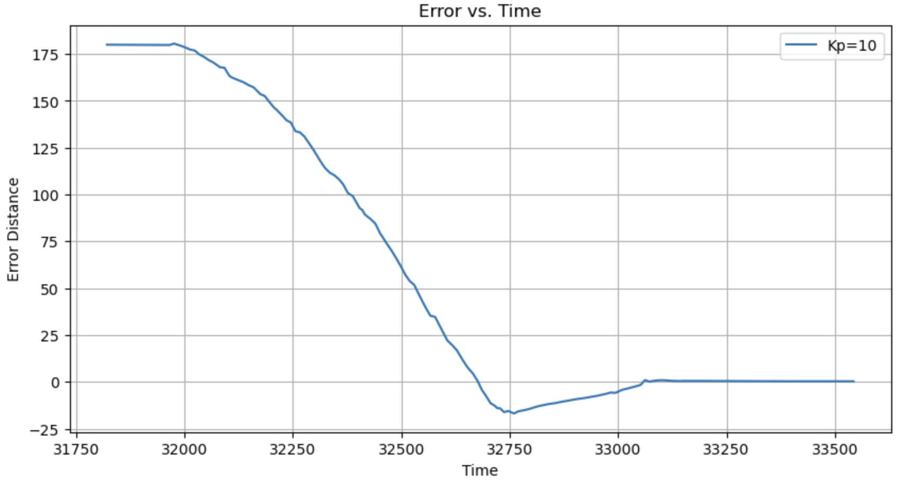
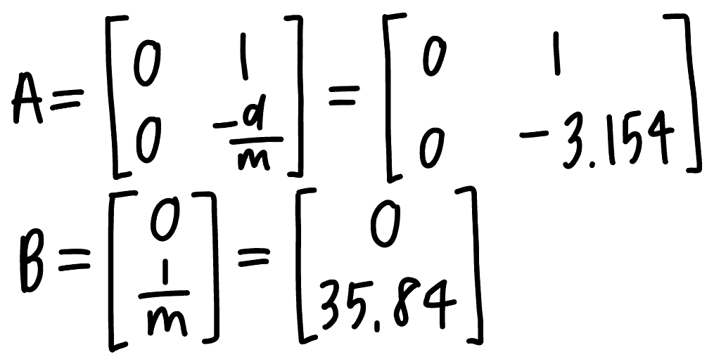
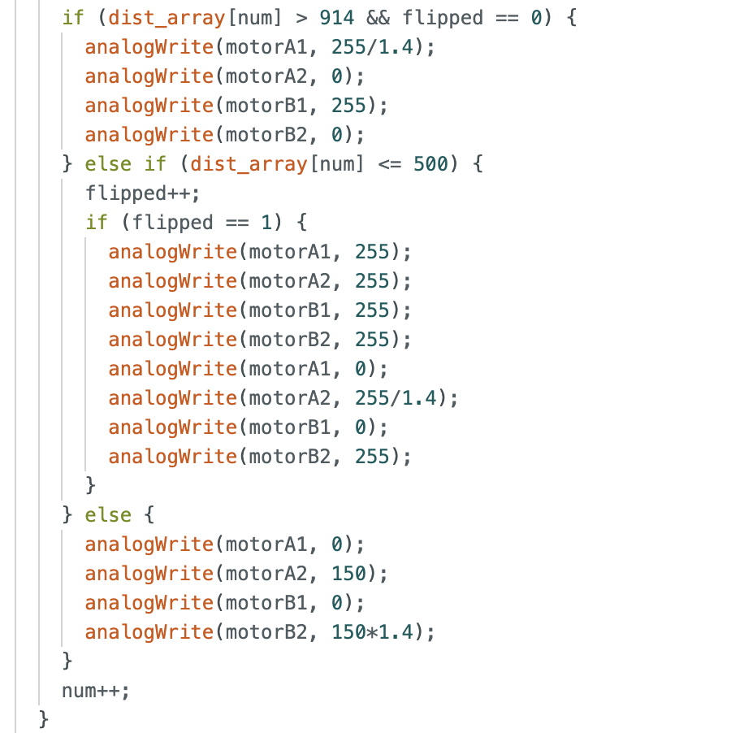
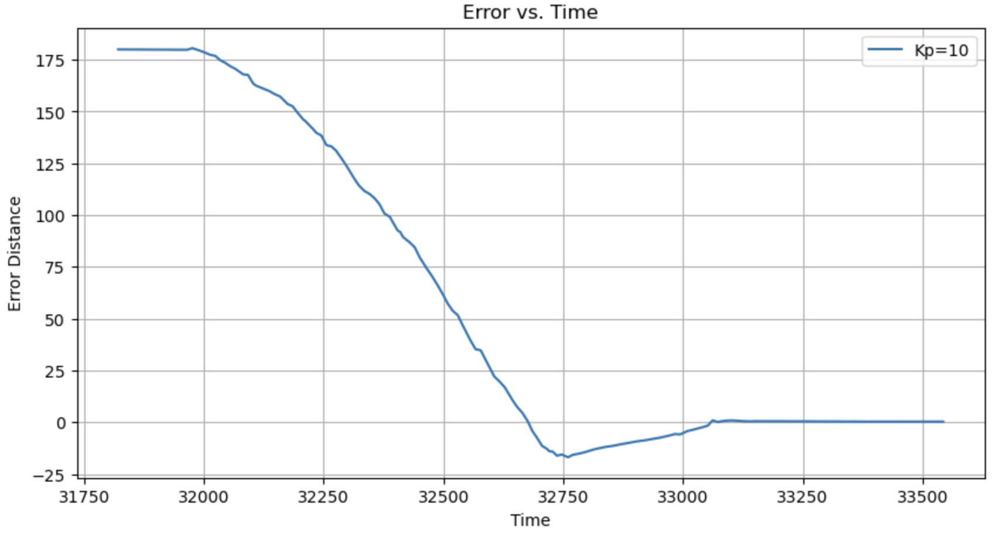
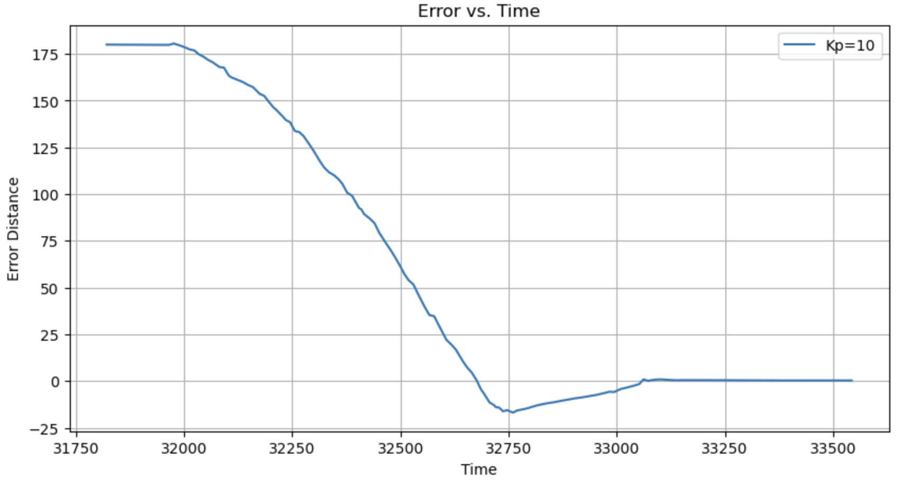

This site displays the work I've completed in MAE4190: Fast Robots.
Labs
Lab 1: Artemis
Lab 2: IMU
Lab 3: TOF
Lab 4: Motors and Open Loop Control
Lab 5: PID Control
Lab 6: Orientation PID Control
Lab 7: Kalman Filters
Lab 8: Stunts
Lab 9: Mapping
Lab 10: Localization (sim)
Lab 11: Localization (real)
Lab 12: Planning and Execution
LAB 1
Artemis
PART I: GOAL
The purpose of the first portion of this lab was to become acquainted with the Arduino IDE and the Artemis Nano microcontroller. This involved testing a few different functionalities of the Artemis board, including the LED light, the serial output, the temperature sensor, and the microphone. Since the Artemis board would be used as a microcontroller in future labs, it was imperative to understand it's design.
SETUP
The materials required for this lab include:
1. A SparkFun RedBoard Artemis Nano
2. A USB C-to-C or A-to-C cable
3. The Arduino IDE, which can be installed from here
EXAMPLE 1: Blink it Up
To test the LED on the board, a built-in example from the Arduino IDE was used. The code turned the LED light on for one second, then off for one second, repeatedly. The results are as shown in the video:
EXAMPLE 2: Serial
The second example involved testing the serial monitor output. The Arduino IDE was used to pass text inputs to the Artemis board, which would then be sent back to the serial monitor in the Arduino IDE from the microcontroller on the board.
EXAMPLE 3: Analog Read
This example tested the temperature sensor on the Artemis board. The sample code sends data from the temperature sensor on the board to the serial monitor in the Arduino IDE. When the chip was blown on or heated up by hand, the temperature readings increased. In the video below, the temperature readings increased as I was blowing air onto the board.
EXAMPLE 4: Microphone Output
The last example tested the pulse density microphone (PDM) on the Artemis board. The built-in example from the Arduino IDE returns the highest frequency of sound captured. The video shows the micrphone capturing three "Hello"s said at different pitches.
PART 2: GOAL
The objective of the second portion of this lab as to set up the Bluetooth connection between the Artemis board and a computer. The Python code written for the Bluetooth connection would be used in the future labs.
SETUP
The materials required for this lab include:
1. Python 3
2. A virtual enviornment
The virtual environment can be set up by running the following commands:
python3 -m pip install --user virtualenv
python3 -m venv FastRobots_ble
The virtual environment then needs to be activated and started in a Jupyter Server:
source FastRobots_ble/bin/activate
pip install numpy pyyaml colorama nest_asyncio bleak jupyterlab
jupyter lab
Once the Artemis board was connected to the computer, the first step was to update the Artemis MAC address.
This can be done by replacing the artemis_address value in the lab document with the MAC address printed by the Artemis board.
By doing so, the Python code can now read the device through Bluetooth and connect to the Artemis board.
Following this, a unique UUID address was generated to create a unique connection to my Artemis board, and not one of my classmate's boards. Because many of the Artemis boards used for this class share the same MAC address, it was possible for the Python code to connect to a different board. The generated UUID was used in the provided Python scripts to ensure a Bluetooth connection to my own board. An UUID was generated with the following code:
from uuid import uuid4
uuid4()
The Bluetooth connection was established, as shown:
TASK 1: ECHO
In developing a wireless debugging system, the first step was sending an ECHO command with a string value from the computer to the
Artemis board. The string would then be sent back to the Python code.
To achieve this, the ECHO command was defined as a command type in ble_arduino.ino and cmd_types.py.
The Arduino code to perform the command:
The Python code and the output:
TASK 2: GET_TIME_MILLIS
The next step involved adding a command to get a timestamp. I used the Arduino function millis() to get the time in milliseconds. The new command GET_TIME_MILLIS was defined as a new command type in ble_arduino.ino and cmd_types.py, similar to the ECHO command. The Arduino code:
The Python code and the output:
TASK 3: Notification Handler
In writing a callback function, the Python code can gather data without calling the receive function.
A helper function was defined as the notification handler. When the notification handler is started, any changes from the
Bluetooth device would be sent to the computer. Once it has been started and the command GET_TIME_MILLIS is sent,
the most recent value for the timestamp would automatically be sent to the computer.
The Python code and the output:
TASK 4: GET_TIME_LOOP
To determine how fast messages are sent from the Artemis board, another command was written. The new command was defined as a new command type in ble_arduino.ino and cmd_types.py. When called, GET_TIME_LOOP runs a loop that gets the current time in milliseconds, which is sent and processed by the notification handler in the Python code. Timestamps were collected for a few seconds, which helps in determining how fast messages are sent. The Arduino code:
The Python code and the output:
By observing the output of the loop, the effective data transfer rate of this method is roughly 5 ms.
TASK 5: Timestamps Array
The next task involved creating an array capably of storing timestamps. This array was declared globally so that it could be
accessed by other functions. The command GET_TIME_LOOP was edited to insert each timestamp into the array, instead of immediately sending timestamps within a loop. Then, a new command, SEND_TIME_DATA, was created to iterate through the array and transmit each timestamp as a string to the computer for processing. A global variable, max_time_stamps, was created to determine the maximum number of time stamps to store. Additionally, num_time_stamps was declared to track the number of time stamps already stored in the array to prevent overfill.
The Arduino code:
The Python code and the output:
TASK 5: Temperature Array
After storing a set of timestamps in an array, I initialized a second array that would store the temperature readings corresponding to each timestamp. Both arrays would be the same size. The command GET_TEMP_READINGS was used to iterate through both arrays concurrently, sending the temperature readings with its corresponding timestamp. The Arduino code:
The Python code and the output:
DISCUSSION
Through this lab, I've learned about two methods of sending data: sending each data point individually vs. storing the data points in arrays and sending them in batches. While the first method allows for real-time data transfer and reduces memory usage, sending each timestamp individually incurred more overhead. By storing the data in arrays and sending them in batches, the overhead of establishing connections and sending data repeatedly is reduced. This also allows for higher throughput and better efficiency. However, using arrays can introduce latency if the array becomes too large or if the array is filling up. If real-time data transfer is crucial and low latency is required, the first method may be preferred due to its immediate data transmission. For applications with high throughput requirements, where sending data in batches can improve overall efficiency, the second method would be more suitable. The speed at which the second method can record data depends on several factors, but storing data in arrays and sending in batches can generally achieve relatively high recording speeds, especially in comparison to the first method with high data rates. Given that the Artemis board has 384 kB of RAM, the amount of data that can be stored without running out of memory depends on various factors such as the size of data elements and the overhead of data structures. With careful memory management, it should be possible to store thousands to tens of thousands of data points without exhausting the available memory.
LAB 2
IMU
GOAL
The purpose of this lab involved familiarizing ourselves with the IMU sensor and the RC car. We collected data from the accelerometer and the gyroscope on the sensor, which were then used to calculate information on the orientation and location of the car.
SETUP
The materials required for this lab include:
1. An Artemis Nano board
2. A 9DOF IMU sensor
3. A Li-Ion 3.7V 850mAh battery
4. A USB cable
5. A Force1 RC car
The image below shows the IMU sensor connected to the Artemis Nano board by a QWIIC connector.
To ensure the connection of the sensor, an example from the IMU library was used. In the example code, the variable AD0_VAL represents the value of the last bit in the I2C address.For this case, AD0_VAL should be set to 0 since the ADR jumper is closed. In addition to this change, a chunk of code was added such that when the board started running,the LED on the board would blink three times. This served as a visual indicationthat would be helpful later in the lab.
The Arduino code, along with the Serial Monitor output:
While observing the acceleration and gyroscope data, I noticed a few things: When the board is rotated, the gyroscope data changes according to the axes of rotation, while the accelerometer data doesn't change. As an example, when the board is rotated around the z-axis, there are changes on the gyroscope data for the z-axis. Flipping the board reflects the same results as rotating the board, but a more sudden change with the gyroscope. Accelerating the board results in changes in the accelerometer data. For example, accelerating the board forward results in an increase in acceleration along the x-axis. In summary, the gyroscope detects angular velocity around its axes, while the accelerometer detects linear acceleration along its axes.
ACCELEROMETER TASK 1
The accelerometer on the IMU can be useful in calculating the roll and pitch values, with the equations:
θ = pitch = tan-1(ax/az)
ø = roll = tan-1(ay/az)
After implementing these functions in Arduino, the pitch and roll data can be observed through the Serial Monitor and the Serial Plotter. The Serial Plotter output at {-90, 0, 90} degrees for pitch and roll:
The Serial Plotter displays the noisy nature of the accelerometer on the IMU. When looking at the ends of the plot, it looks like the accelerometer has determined the -90 degrees and 90 degrees accurately. Although at the end of the plot where it should be 90 degrees, the output was around 100 degrees. This may be due to human error, where I didn't exactly end the turn at 90 degrees. With this being said, a two-point calibration wasn't necessary.
ACCELEROMETER TASK 2
To analyze the noise in the frequency spectrum, the Fourier Transform was used. Using this Python tutorial, the accelerometer's pitch and roll data were plotted over the time domain, as well as the frequency domain. The output plots:
Analyzing the graphs, there isn't much noise in the IMU accelerometer data. Because there weren't any noticeable spikes or high amplitudes during low frequencies, a low-pass filter isn't needed. Since the low-pass filter has already been implemented on the IMU by default, there is no need for another one.
ACCELEROMETER TASK 3
Although there wasn't much noise in the data, I applied a low-pass filter because the accelerometer will be more prone to noise while the car is closer in proximity. The cutoff frequency was determined by looking at the frequency spectrum, and determining a number that is below the frequencies of interest in the signal but above the frequencies containing most of the noise. The sample rate of the accelerometer affects the choice of cutoff frequency primarily due to the Nyquist frequency. The cutoff frequency should be chosen below the Nyquist frequency to avoid aliasing and accurately capture the signal's frequency content. When enough force was used to induce a vibration on the table, there were vibratonal noises, which led to additional high-frequency components to the accelerometer data. Consequently, the choice of cutoff frequency for the lowpass filter becomes crucial to effectively filter out this added noise while preserving the essential features of the signal.
The results show a smoother curve with the effects of noise significantly reduced:
GYROSCOPE TASK 1
The gyroscope data can be used to calculate roll, pitch, and yaw values, with the equations:
ø = roll = ø + gx * dt
θ = pitch = θ + gy * dt
ψ = yaw = ψ + gz * dt
While playing around with the IMU, the Serial Plotter displays:
The readings from the gyroscope displayed a drift over time, which may be due to integration errors. This means that the time delay increases as time passes. On the other hand, the gyroscope provided more accurate data during rapid movements or vibrations, mainly because the accelerometer readings are affected by inertial forces. While increasing the sampling frequency improves the accuracy on gyroscope readings by reducing the integration error over shorter time intervals, higher sampling frequencies may increase power consumption and processing load. To overcome the limitations of each sensor, a complimentary filter was used to compute pitch and roll values that are accurate and stable. The equations are:
θ = pitch = (θ + θg * dt)(1 - α) + θα * α
ø = roll = (ø + øg * dt)(1 - α) + øα * α
The choice of alpha represented the trade-off between response time and noise reduction. After changing the alpha value a few times and observing the changes in data, I settled with 0.2.
With the complementary filter:
The combined measurements from the accelerometer and gyroscope stability and accuracy, or at least more stable and more accurate than the measurements from each separately.
SAMPLE DATA
Following this, I took a few steps to speed up the execution time for the main loop. I made sure to check whether the IMU data was ready or not in every iteration of the main loop before storing the data into the array. I removed all delays and unnecessary Serial.print statements. With these improvements, the sampling rate is now 3ms for new data. The main loop on the Artemis is running faster than the IMU produces new values! The Arduino code:
The Python script and output:
RECORD A STUNT!
After mounting the 850 mAh battery on the bar and putting AA batteries into the remote, I played around with the RC car. As shown in the video below, the car seems very sensitive and hard to control. The car can flip if there's a sudden reverse in the opposite direction. Another thing to note was that the car moved at constant speeds, unable to slow down or speed up.
LAB 3
TOF
GOAL
The purpose of this lab is to familiarize ourselves with the Time of Flight (ToF) sensors, VL53L1X, which can be used to measure the distance away from an object. Two ToF sensors were attached to the RC car and used to collect data simultaneously.
SETUP
The materials required for this lab include:
1. An Artemis Nano board
2. A USB cable
3. Two 4m ToF sensors
4. A QWIIC breakout board
5. Two QWIIC connectors
6. A ruler or graph paper
PRELAB
The two sensors share an I2C address of 0x52 by default, based on the VL53L1X datasheet.
Because the address of a ToF sensor is hardwired on the board, the two sensors can't be accessed individually. There are two approaches to solving this issue. One approach is to keep the same address on the two sensors, but alternate between using each sensor through the program while both sensors are powered. An issue with this approach is the delay involved with turning sensors back on. Another option is to change the address of one sensor during setup, through the shutdown pins, so the Artemis can differentiate between the two. I went with the latter approach, and soldered the XSHUT pin of one sensor to GPIO 7 on the Artemis board. This way, the corresponding sensor can be shut off during setup and the address of the other sensor can be changed. Following this, the first sensor can be turned back on, and the two sensors can now work simultaneously with different addresses.
Given the range and angular sensivity of the ToF sensors, I've decided to place one in the front of the car and the other on one side of the car. The front sensor allows the RC car to detect obstacles directly in its path, allowing it to react promptly and avoid obstables while moving forward. With one sensor on the side of the car, there is limited coverage for obstacles that might approach from the side. Some scenarios where the car will miss obstacles include blind spots and obstacles that are close to it. When obstacles are in blind spots like the side of the car without the ToF sensor, or blind spots caused by a sharp turn, the obstacles will be missed until the car changes direction. Objects very close to the car's side might also be missed by the side sensor if its range doesn't extend far enough laterally.
The image below depicts the wiring diagram with two ToF sensors, an IMU sensor, a QWIIC breakout board, and the Artemis Nano board:
TASK 1: Connecting a ToF Sensor to the Artemis
To connect a ToF sensor to the Artemis board, I cut off one end of the QWIIC connector and soldered it to the sensor. By checking the QWIIC connector datasheet, one can determine that the red wire connects to VIN, black to GND, blue to SDA, and yellow to SCL. Then, the other end of the QWIIC connector is attached to the QWIIC breakout board, which is then connected to the Artemis board. The XSHUT pin was also soldered to GPIO 7 for later use.
TASK 2: Artemis scanning for I2C device
By burning Example5_wire_I2C in Apollo3 examples, the Artemis detected a sensor with address 0x29, which is different from the expected 0x52. By observing the binary representation of 0x29 and 0x52, one can see that 0x29 is 0x52 bitshifted to the right. This is because the rightmost bit is used to indicate a read or write to the address.
TASK 3: Three Modes of the ToF sensor
Time of Flight sensors offer three modes of operation to optimize ranging performance based on the maximum expected range. The short range mode is optimized for close-range detection and provides high accuracy and resolution within its range, but is limited in its detection range. The long range mode offers the maximum detection range, with reduced accuracy and resolution compared to shorter-range modes. This mode also involves longer measurement times, which may introduce delays in detecting nearby objects. The medium range mode offers a balance between detection range and accuracy. Considering the size of the car, the short mode is adequate. This can change later, as testing will better inform us of the needs of the car.
To test the accuracy of the ToF sensor in the short range mode, Example1_ReadDistance in Apollo3 examples was used. Since the default mode is the long range mode, a line was added to the setup code: distanceSensor.setDistanceModeShort();
50 measurements were taken with the ToF sensor at 30 mm, 60 mm, 90 mm, and 120 mm from a wall. The average of the 50 readings were then plotted against the actual, expected measurements, as shown below. The actual sensor deviates more and more from the expected as the distance increases, which means a decrease in accuracy. In terms of repeatability, the 50 measurements taken at each distance were relatively consistent, and even more so at shorter distances. The experiment was then repeated for a darker environment, which showed higher accuracy.
TASK 4: Two ToF Sensors
Both Time of Flight sensors are now ready to be wired to the Artemis board (based on the wiring diagram in the prelab)! As mentioned in the prelab, during setup, one sensor was turned off while the address of the other sensor was changed, and then turned back on. By doing so, the two sensors can now be recognized separately. The Setup code snippet:
The output displays independent measurements from the two ToF sensors:
TASK 5: ToF Sensor Speed
To determine the time it takes for the sensor to finish a measurement, a piece of code was written to print the Artemis clock time continuously, and the new ToF sensor data from both sensors only when available. The corresponding code and its output:
As seen from the output, it takes approximately 60 ms for the sensors to produce a distance measurement. Another thing to note is that the loop takes roughly 7 ms to execute without any measurements ready, and 11-12 ms with measurements to print. The main limiting factor is the internal delay of the sensor.
TASK 6: Time v. Distance
The next step was to send these time-stamped ToF readings over Bluetooth to the computer, and analyze the data with a plot in Jupyter notebook. A new notification handler was written to receive the string from the Artemis, parse the string and store the values into three arrays, corresponding to the time, distance reading from sensor one, and distance reading from sensor two. The arrays were then used to generate a plot of the data with time on the x-axis and ToF data on the y-axis.
The resulting graph:
LAB 4
Motor Driver and Open Loop Control
GOAL
The purpose of this lab involved implementing control of RC car, using motor drivers and open loop control. By the end of the lab, the car could follow a set of pre-programmed moves, through the Artemis board and dual motor drivers.
PRELAB
There were a few factors to consider when mounting the motor drivers. First, for control on the Artemis board, I decided to use GPIO 15 and 16 for one motor, and GPIO 2 and 3 for the other. The main consideration in choosing these pins were their PWM capabilities. Then, the Artemis board and the motor drivers were powered with two separate batteries since using one battery would result in transient effects, which would reset the microcontroller. Using the same battery could also lead to noise from the motors that could affect the sensors attached to the Artemis board. With these factors in mind, I drew the following wiring diagram:
TASK 1: EXTERNAL POWER SUPPLY AND OSCILLOSCOPE
To verify the circuit connection, one dual motor driver was connected to an external power supply and an oscilloscope. To simulate conditions similar to the 850 mAh battery, the power supply was set to 3.7V (the voltage output of the battery). I forgot to take a picture of the oscilloscope setup while I was doing this, and I realized later, and took a picture of the setup for the next step, which was very similar. But basically, the power supply was used in place for the motor in my circuit diagram, and the oscilloscope was used connected to the corresponding GND and VIN pins on the motor driver.
After setting up the connections, a PWM signal was generated to regulate the power on the motor driver output. analogWrite was used to generate a PWM input from the Artemis board, with one input of 0 and the other of 200. The PWM output on the oscilloscope and the corresponding code snippet:
TASK 2: MOTOR TESTING
After unscrewing and removing the top of the car, I cut the LED wires, unmounted the PCB, and cut the wires connected to the PCB as close to the board as possible. With this, the car was taken apart. To test the motor drivers one at a time, they were soldered to one of the motors on the car. Still using the external power supply, the wheels were programmed to spin in both directions for 1 second each.

Then, the 850 mAh battery was attached and the wheels were tested again to ensure that the circuit works while being fully battery powered. The wheels were programmed to spin in one direction for a second, stop or slow down for a second, and then spin in the other direction for another second (all in a loop). The video below shows all of the wheels spinning correctly with the batteries attached.
TASK 3: RE-ASSEMBLING
After verifying the functionality of the motors, the car was put together with all the necessary components, as shown in the diagram below.
TASK 4: CALIBRATION
To test the range of the motors, I found the lower limit of the PWM value by decreasing the value until the car wasn't moving anymore. The last value at which the wheels moved is the lower limit in this case. Using the analogWrite function, the lower bound on the PWM was found to be around 30 for the left side, and around 40 for the right side. This meant that if the input values were constant for both sets of motors, then the car would be moving towards the left rather than in a straight line. Thus, a calibration factor had to be incorporated. The video below shows the car moving in a relatively straight line with a calibration factor of 1.375.
TASK 5: OPEN LOOP CONTROL
Demonstrating open loop control, the car was programmed to spin counter-clockwise, move forward, spin clockwise, and then move backward. The video, along with the corresponding code snippet is attached:
LAB 5
Linear PID Control and Linear Interpolation
GOAL
The purpose of this lab is to understand and implement PID control with the components already attached to the car, as well as implementing extrapolation.
PRELAB
To setup a system for testing and debugging the PID controller, a few bluetooth commands were set up between the Artemis and the computer. First, a command was added so that control values can be altered over bluetooth, since uploading new code to the Artemis board everytime a value is changed is time consuming, as shown below.
Following this, another command was added to execute the PID controller over a fixed period of time, collect debugging data in arrays, and retrieve the arrays from the Artemis over Bluetooth. The data recorded includes the timestamps, the distance data from the front ToF sensor, and the PWM values.
In Python, the following procedure started the PID controller and received data over Bluetooth.
TASK 1: Position Control
The goal was to have the car drive as fast as possible towards the wall and stop when it's 1 ft or 304 mm away from the wall. To do this, a function was written to calculate the speed at which the car should be going based on the PID controller values and the ToF sensor readings. The distance measured by the ToF sensor is used to calculate the difference between the target and current distance, which is the error. This error is then used to find the PWM values needed to spin the motors and the direction the car should move in (forward, backward, or stop when at target distance). This PWM value is clamped between 40 and 255 based on the range determined from Lab 4.
PID Values
I went for the simple P controller for its simplicity. Given that the range of motor input values is between 40 PWM and 255 PWM, and that the car can start anywhere from 2000 mm to 4000 mm from the wall, a reasonable range of the proportional controller can be evaluated. At the minimum possible speed and maximum possible distance, the minimum Kp value would be 40/(4000-300)=0.0108. At the maximum possible speed and minimum possible distance, the maximum Kp value would be 255/(2000-300)=0.15. After trial and error, I found that a Kp value of 0.03 worked best for me. This value presented a balance between speed and overshoot.
Range and Sampling Time
For the ToF sensor to function within the range of 2-4 meters from the wall, I used the long distance mode on the sensor. To account for the relatively low sampling frequency of the ToF sensor, I implemented a range around the target distance from the wall (304 mm) where this target distance would be considered done. By recording the distance reading from the sensor only when new data is ready and only once in every loop by storing it in a variable, the sampling time is also decreased. Furthermore, I only sent all the data over with Bluetooth after the target has been reached, which removed overheads involved with sending data points over within the loop. With this, my sampling time was about 100 ms. This relatively large sampling time is directly proportional to the overshoot I am getting, but it's alright since the controller works.
Videos and Plots
Trial 1: Kp=0.03 on a smooth surface from roughly 2 meters (I don't have a measuring tape, sadly)
Trial 2: Kp=0.03 on a rough surface (carpet) from roughly 2 meters
Trial 3: Kp=0.05 on a rough surface (carpet) from roughly 2 meters (visibly larger overshoots)
Having implemented the simple proportional controller, there are definitely advantages to exploring the other ones involving integral and derivative control. The integral controller theoretically improves the steady-state accuracy, as the semi-squiggly steady-state plot represents some steady-state error in my trials. It will also allow for tigether control around the setpoint. The derivative controller can help improve stability and reduce overshoot by anticipating changes in error and dampening rapid fluctuations. I didn't have time to explore these, but they definitely seem worthwhile.
TASK 2: Extrapolation
As mentioned previously, the sampling rate was around 100 ms. This is the frequency at which the ToF sensor was returning distance measurements, and the rate at which the PID control loop was running. To decouple these two rates and enable the control loop to run faster, the control loop logic was changed so that the PID control was calculated during every loop, even if a distance reading isn't ready.
Faster Loop
The first step involved allowing the loop to calculate PID control values even if the ToF sensor doesn't have new readings. If a new datapoint isn't ready, then the previous measurement was used. To achieve this, the loop that checked for a new datapoint was edited, as shown below:
With this, the rate of the loop has increased from 100 ms approximately 10 ms, as shown below. In comparison to the ToF sensor sampling rate, this is 10 times faster.

Trial 4: Kp=0.03 on a rough surface (carpet) from roughly 2 meters, with faster control loop
Extrapolator
The next step was to use an extrapolator. Instead of using an old datapoint to pass to the PID controller, an estimate for the car's distance from the wall was calculated with the two most recent readings from the sensor. The extrapolator function calculates the slope corresponding to the last two readings, and then estimates the current distance from the wall based on the amount of time that has passed since the last reading and the calculated slope. The following code snippet was used:
Trial 5: Kp=0.03 on a rough surface (carpet) from roughly 2 meters, with extrapolation
LAB 6
Orientation PID Control
GOAL
The purpose of this lab involved experimenting with orientation PID control with the IMU sensor, in comparison to using the ToF sensors in the previous lab. To get experience with orientation control, we were tasked with controlling the yaw of the car.
PRELAB
To prepare for testing and debugging the orientation PID controller, commands similar to those used for the speed PID controller were used. The following changes PID values:
The second command, used to start the controller, was modified to use the IMU sensor in place of the ToF sensors. The command prints out timestamps, the yaw data from the gyroscope of the IMU, and the motor PWM values over Bluetooth.
Lastly, the Python code to receive data over Bluetooth was also modified slightly.
TASK: ORIENTATION CONTROL
To demonstrate my understanding of orientation PID control, I decided to have the car rotate to an angle of 180 degrees from its original position. A function similar to that of the previous lab was used to calculate the speed at which the car should be spinning based on the PID values and gyroscope readings. After calculating the yaw orientation with the IMU gyroscope z reading, it was used to find an error from the target angle. The error then determines the PWM values needed to spin the motors and whether the car should spin counter-clockwise, clockwise, or stop spinning.
P CONTROLLER
The first step was to start with the simplest P controller. It would be ideal to have minimal overshoot with the Proportional controller so that the Integral and Derivation controllers can balance it, allowing the car to spin to its desired angle as fast as possible. My first trial was Kp=2. There was no overshoot, but there was a steady state error of roughly 30 degrees, which wasn't ideal.
To reduce the steady state error and the time it takes to reach steady state, I decided to increase the Kp value. Below are results for Kp=4.
These results didn't show any overshoot and barely any steady state error, and thus Kp=4 is a good value for the P controller. However, the ideal situation would be faster time to steady state compromised with slight overshoot, since the overshoot can be optimized with the integral and derivative controllers. Thus, after running a few more trials. I ended with Kp=10.

DISCUSSION
Digital Integration
Because we have to integrate the gyroscope data to estimate the orientation of the car, integration drift can occur. Small errors in gyroscope measurements, like bias or noise, can accumulate over time. These errors cause the estimated orientation to deviate from the true orientation, especially during long-duration operations, and is thus called integration drift. The biases and noises can, of course, also lead to an offset or deviation from a correct measurement. They would need to be accounted for.
Bias
My IMU sensor does seem to have an bias where there is an offset in the sensor's input. Initially, my car was spinning three full circles before coming to a stop with the intial code. With this, I calibrated my yaw calculation from the gyroscope output such that this bias/offset was accounted for.
Maximum Velocity
The gyroscope on the ICM20948 has a programmable full-scale range of ±250, ±500, ±1000, and ±2000 degrees per second. This full-scale range controls the sensitivity of the gyroscope, and thus the maximum rotational velocity that the gyroscope can read. The default setting is ±250 degrees per second, which wasn't sufficient for our applications. During the first few runs, the car would spin three full circles, but the recorded measurements show only a 180 degree change in angle, which meant an enormous accumulation of error. Thus, it was changed to ±1000 dps with:
pICM_20948_fss_t myFSS;
myFSS.g = dps1000;
LAB 7
Kalman Filters
GOAL
The objective of this lab is to experiment with Kalman filters, and use it to supplement the slowly sampled ToF data from Lab 5. The will allow the car to drive even faster.
TASK 1: Estimate the Drag and Momentum
In order to build the state space model for the system, we need to estimate the drag and friction forces acting on the car, along with its inertia. This will help determine the drag and momentum terms in the A and B matrices of the state space model. To achieve this, the car was driven at a constant input motor speed of approximately 70% of full speed towards a wall and stopped right before crashing. The relevant Arduino code, along with the results are shown for the ToF sensor reading, the computed velocity, and the motor input.
From the data, the steady state speed, 90% rise time, and the speed at 90% risetime can be determined. From equations provided for steady state in lecture, along with the steady state values, d and m can be determined as well. The python code and the calculated values:
TASK 2: Initialize the Kalman Filter
State Space Model
Given the values above, the A and B matrices are:

To discretize the A and B matrices, the following calculations were performed. To calculate the sampling time, the average of the difference between each timestamp was taken.
The C matrix is simply [-1, 0] since the only measurement is taken from the ToF sensor, as the negative distance from the wall. The intial state vector, x, is [[-TOF[0]],[0]]. This is because at the start, the car is stationary at a fixed distance from the wall.
Process Noise and Measurement Noise Matrices
In order for the Kalman Filter to work, the process noise and sensor noise covariance matrics also need to be specified. If the process noise is larger, the filter will place more trust on the sensor measurements. If the sensor noise is larger, the filter will trust the predictions from the model more. Also, if the vales cannot be too small or too big in order for the Kalman Filter to function properly. I chose the same covariance values as provided in lecture: σ1 = 27.7 mm, σ2 = 27.7 mm/s, and σ3 = 20 mm. These constants were then used to implement the noise matrices needed for the model.
TASK 3:Implement and Test the Kalman Filter
To sanity check the parameters chosen, the Kalman Filter implementation provided was used in Jupyter first. The relevant code:
With the initial parameters chosen earlier, the graph is generated and shown below. The model does pretty well in predictions after the first two, and adheres closely to the ToF distance measurements. To account for this and tune the parameters, I experimented with various process and sensor noise values. The second graph depicts an increase in σ1, which resulted in a closer prediction to the measurements from the beginning. This makes sense since a higher value represents more process noise, and places more trust on the sensor measurements than the process calculations. The third graph illustrates an even closer plot, as a result of decreasing σ3. A lower σ3 means there is less noise in the ToF sensor measurements, and places more trust in the measurements.
LAB 8
Stunts
GOAL
This lab combines the work from all previous labs to perform a fast stunt. Task A involves driving the car fast towards the wall, performing a flip upon reaching the sticky mat located 0.5m from the wall, and driving back in the direction it came from.
TASK A: Position Control
This stunt consists of three parts: the forward motion, the flip, and the backward motion. The flip of the car requires it to be moving forward at high speeds and then suddenly moving backwards at high speeds. This sudden change in momentum will result in the desired flip. With this said, the Arduino code I used is shown:

After receiving the distance reading from the ToF sensor, the car would perform the flip if the distance is less than the threshold desired, and would simply move forward if it has yet to reach the threshold. After the threshold is reached, the wheels were stopped suddenly to initiate that change in momentum for the flip. Then, the wheels would move in the direction it came from. This series of steps should produce the desired stunt. However, because I decided to use a flip week on this assignmnet and is doing it too late, I couldn't find the sticky mats in the lab anymore and couldn't test it properly. The videos below show failed attempts of the stunt on wood floors. Because of the lack of friction, the flip didn't occur. Instead, the car simply moved forward and then backward :(
TASK B: ORIENTATION CONTROL
After finding out that the previous stunt wouldn't work on my wood floors, I attempted the other option for this lab. This task involves driving fast towards a wall, and then intiating a 180 degree turn when the car is within 3 feet from the wall. This involved integrating the gyroscope and the ToF sensor for orientation control when desired. My Arduino code:
However, this didn't work as desired either. I'm not sure why but I've spent too much time debugging already, and I thought it would be more beneficial if I spent more time on the later labs. Becuase I decided to take a slip week, the deadline overlapped with Lab 9, and I needed to start working on Lab 9. So I ended my trials here.
LAB 9
Mapping
GOAL
The purpose of this lab involves mapping out a static room, which will later be used for localization and navigation tasks. To produce the map, the car will be placed in a few marked locations in the "room" and spin around its axis while collecting ToF distance readings. These readings will then be merged together with transformation matrices, plotted, and used to build the map with straight line segments.
TASK 1: Control
I've chosen to implement PID control on the orientation of the car since it has already been implemented in a previous lab, and enables smaller and more accurate rotations. The car rotates 18 times, in increments of 20 degrees, which sums to a total of 360 degrees. After the car has finished rotating the 20 degree increment, it begins extracting the ToF readings and sending it back to my computer for later analysis. The relevant Arduino code:
I used the same PID controller values as evaluated in a previous lab, which proved to work well. For the performance of the controller with these values, please refer to Lab 6! As shown in the video below, the car successfully rotates through 360 degrees in increments.
TASK 2: Motion Analysis
Sensor Drift
To reduce sensor drift, a delay of 100 ms was added between measurements to ensure that the robot isn't moving while taking the ToF readings. Although sensor drift can introduce errors over time, the delay helps mitigate the impact of drift on the accuracy of orientation estimation. In addition, the current angle was continuously reset to 0 after reaching a desired orientation.
Size and Accuracy of Increments
The size and accuracy of the increments in which the robot turns contribute to the precision of the orientation estimation. With consistent and small increments of 10 degrees, the orientation estimation can be more accurate. However, even with small increments, there may still be errors due to factors such as sensor noise and mechanical imprecision.
On-axis Turns
I noticed that the robot consistently falls short of returning to its exact orientation, which suggests that there may be limitations in the robot's ability to rotate perfectly on its axis. This could be due to mechanical constraints, wheel slippage, or inaccuracies in motor control system. However, as these errors are consistent across mappings, it can be corrected in the code.
With these effects, the observed maximum error is around ±3 inches. This is relatively small compared to the scale of a 4x4m room. Thus, the maximum deviation from the true orientation is within an acceptable range for mapping purposes.
TASK 3: Read Out Distances
After performing the 360 degree turn at each of the marked positions in the lab space, the ToF distance readings were collected for analysis. To ensure accuracy and make the analysis easier, the car started in the same orientation at every marked position. After collecting data twice at each point to check accuracy, the polar coordinate plots generated are as shown:
Based on the plots, the behavior seems reliable enough. It's enough to trust that the readings are equally spaced in angular space, and the use of gyroscope values isn't necessary.
TASK 4: Merge and Plot
The next step was to convert the measurements from the ToF sensor to the inertial reference frame of the room with transformation matrices. As provided in lecture, the transformation matrix is given by:
The last column is the coordinate of the center of the car, relative to the global frame. The rotation portion represents the orientation of the car, using the angle θ between the two x-axes of the global and local frame. However, since there is no translation along the z-axis and only rotation about the z-axis, this matrix simplies to a 3x3 matrix. Another factor to consider is the mounting of the ToF sensor, which is counted for in the robot pose. After plotting all the data onto on map, the results are as shown:
TASK 5: Line-Based Map
The locations of the actual walls and obstacles were estimated based on the scatter plot, as shown below. There is still quite a bit of noise, which could definitely be mitigated with more trials and taking data at other locations.
LAB 10
Localization (sim)
GOAL
The objective of this lab is to implement grid localization using Bayes Filter. By discretizing the continuous state space into a finite 3D grid, the algorithm estimates the robot's pose by updating probabilities associated with each grid cell based on sensor measurements and motion models.
SETUP
Robot vs. Grid Localization
Robot localization refers to the process of determining the position of the robot relative to its environment. By integrating sensor data and motion models, the algorithm continuously refines the belief about the robot's location. Grid localization involves discretizing the continuous state space of the robot into a finite 3D grid, given by (x, y, θ). Each grid cell stores the probability of the robot's presence, and the Bayes filter algorithm updates these probabilities based on movement and measurement data. The robot's world is a continuous space that spans:
[-1.6764, +1.9812) meters or [-5.5, 6.5) feet in the x direction
[-1.3716, +1.3716) meters or [-4.5, +4.5) feet in the y direction
[-180, +180) degrees along the θ axis
3D Grid Visual
An an example of a 3D grid with (20,20,18) cells:
As an example, the robot is initializes with a point mass distribution at (0,0,0) here. Using the grid resolution and the grid size, it can be calculated to start at the grid cell index (10,10, 9). The initial probability at the grid cell index (10, 10, 9) is 1.0, and 0.0 everywhere else. Throughout the localization process, the probabilities associated with each grid cell are updated, with the most probable cell indicating the robot's estimated pose.
TASK 1: Compute Control
The first step in finding the probability of the new pose of the robot, the actual movement of the robot needs to be determined. From the odometry motion model, this involves taking the two odometry poses and calculating two rotations and a translation corresponding to this change in position. As provided in lecture, the functions are:
The resulting code:
TASK 2: Odometry Motion Model
Once the actual movement of the robot has been determined, the next step in the odometry motion model involves calculating the probability that this movement occurred. I assumed a Gaussian distribution to model the noisy control data in the model. With the algorithm for the motion model provided in lecture, the relevant code:
TASK 3: Prediction Step
Now it's time to predict the robot's position. This involves iterating through each cell in the grid to calculate the probability that the robot moved to its current position from a previous position. Since the grid has 12×9×18 = 1944 possible states, reducing the run time is important. The code first checks whether the probability the state (i.e., grid cell) contains a probability of less than 0.0001, because those states are negligible as they don't contribute much to the belief. After determining the non-negligible states, the odom_motion_model function is used to calculate the probability that the robot started at a prev_pose and ended at a curr_pose, given its control input. The resulting code:
TASK 4: Sensor Model
A sensor model, modeled with the Gaussian distribution, is required for the update step of the Bayes Filter. This model determines the probability that a sensor reading is correct, given the robot's position. The code:
TASK 5: Update Step
Finally, the update step of the Bayes Filter calculates the belief of the robot in each state (i.e., grid cell). This is done by iterating through each grid cell and determining the probability that the robot is in the cell, given the sensor measurement. The belief matrix is then normalized to ensure a valid probability distribution. The resulting code:
SIMULATION
The completed simulation is shown below. The blue path represents the belief of the robot, the green path represents the ground truth, and the red path represents the odometry measurements. It is clear that the Bayes Filter (blue) preforms pretty well, in comparison to the sensor (red).


 
